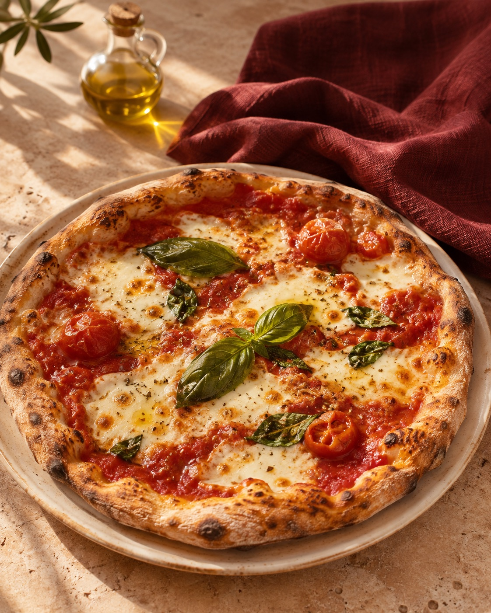
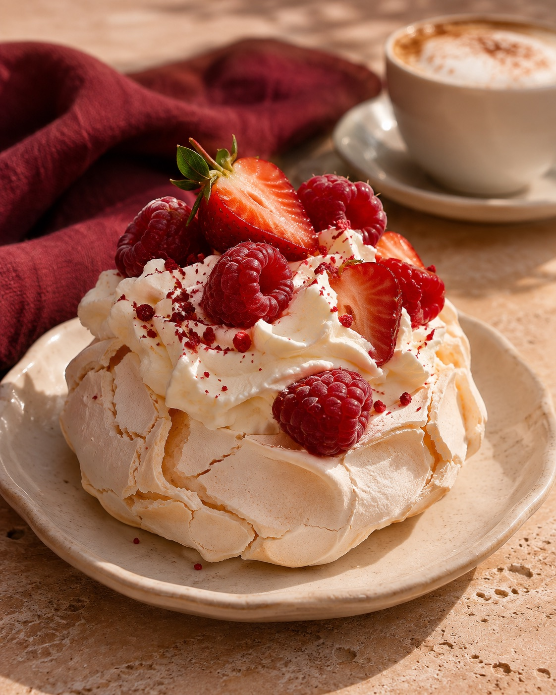

01
Тонкое тесто. Большой повод собраться.
МАЛЕНЬКАЯ ИТАЛИЯ В ТАГАНРОГЕ
Пицца для всей компании. Десерт — только для себя.
И время, которое хочется провести вместе.


И кое-что сладкое02 / СЛАДКАЯ СТОРОНА ЖИЗНИ
Большой день или обычный вторник —
для десерта повод найдётся всегда.
Загляните в кондитерскую «Сан-Ремо», выберите что-нибудь к кофе или возьмите сладкое с собой. Пусть у дня будет приятное послевкусие.
03 / ВРЕМЯ ДЛЯ СВОИХ
Самое ценное за столом —
те, кто сидит напротив.
Семейный обед, встреча с друзьями или вечер вдвоём. Выбирайте компанию — повод уже есть.
Заглянуть между делами, встретиться после прогулки или остаться на десерт. Иногда лучшие планы — самые простые.
Найти насКогда хочется устроить вкусный вечер дома. Уточните по телефону, что можно заказать навынос и к какому времени приготовить.
04 / ВАШ СТОЛИК ГДЕ-ТО ЗДЕСЬ
Таганрог
ул. Александровская, 105
Столик, меню и заказ навынос — одним звонком.
Часы работы рекомендуем уточнить перед визитом.